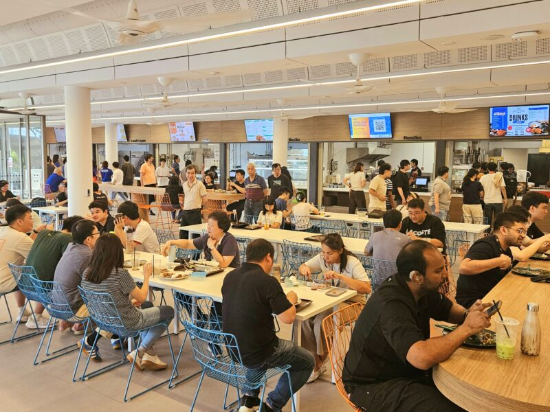

Hey there, NUS!
Let's find you the best spot to eat ⭐
Hungry? Let's go!

PGP Aircon Canteen
Low Crowd (16%)
50 / 308
Updated 18 minutes ago

Frontier
Low Crowd (21%)
150 / 700
Updated about 4 hours ago

Central Square @ YIH
Low Crowd (32%)
100 / 314
Updated about 4 hours ago